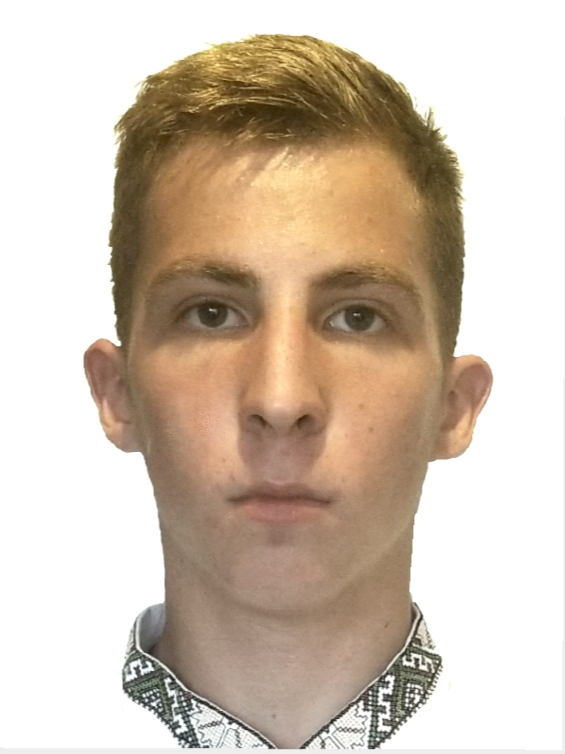
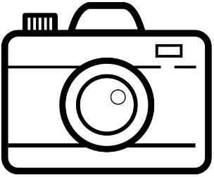

Andrii Protsenko
Creative Director
📅June 26, 2004
Zaporizhia, Ukraine
✉ example@gmail.com
📞 + 380930988587
@andrii_protsenko
Zaporizhia, Ukraine
✉ example@gmail.com
📞 + 380930988587
@andrii_protsenko
About Me
I'm Creative Director and Ul/UX Designer from Kyiv, Ukraine, working in web
development and print media. I enjoy turning complex problems into simple, beautiful
and intuitive designs.
My job is to build your website so that it is functional and user-friendly but at the
same time attractive. Moreover, I add personal touch to your product and make sure that
is eye-catching and easy to use. My aim is to bring across your message and identity in
the most creative way. I created web design for many famous brand companies.
development and print media. I enjoy turning complex problems into simple, beautiful
and intuitive designs.
My job is to build your website so that it is functional and user-friendly but at the
same time attractive. Moreover, I add personal touch to your product and make sure that
is eye-catching and easy to use. My aim is to bring across your message and identity in
the most creative way. I created web design for many famous brand companies.
What I'm Doing

design made at a professional level.
Web Design
The most modern and high-qualitydesign made at a professional level.

Web Development
High-quality development of sites atthe professional level.

Mobile Apps
Professional development ofapplications for IOS and Android.

Photography
I make high-quality photos of anycategory at a professional level.